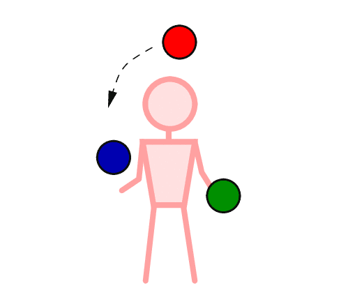
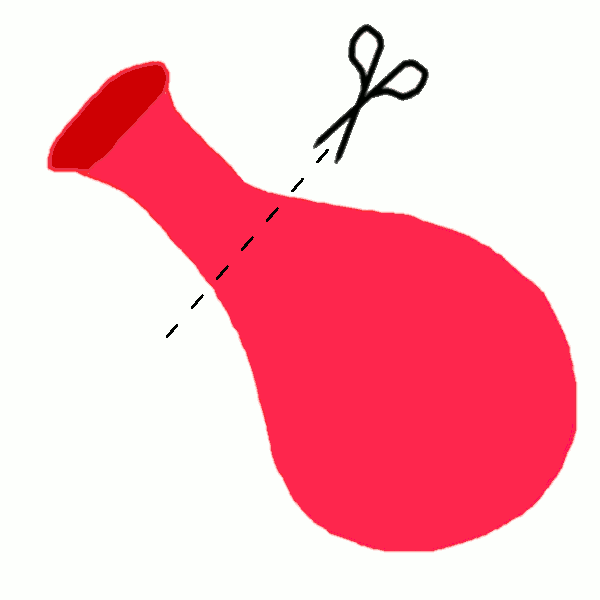
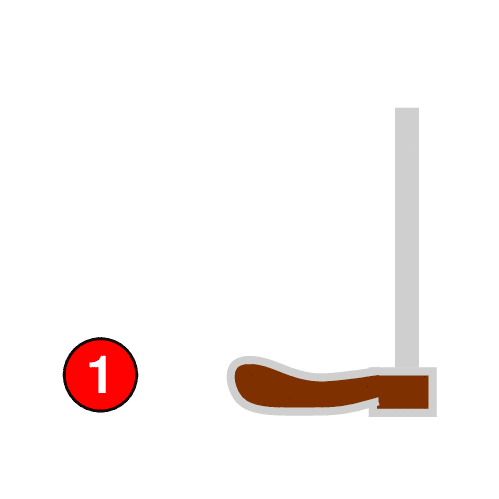
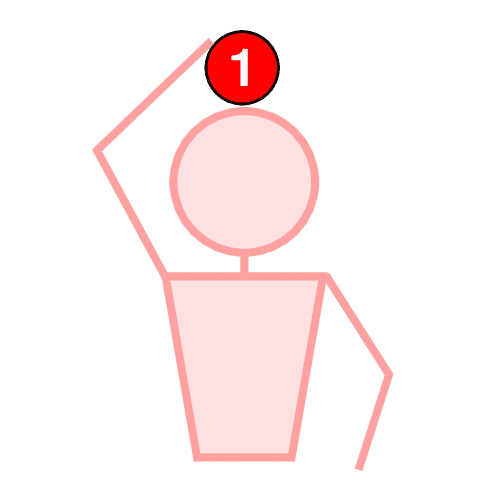
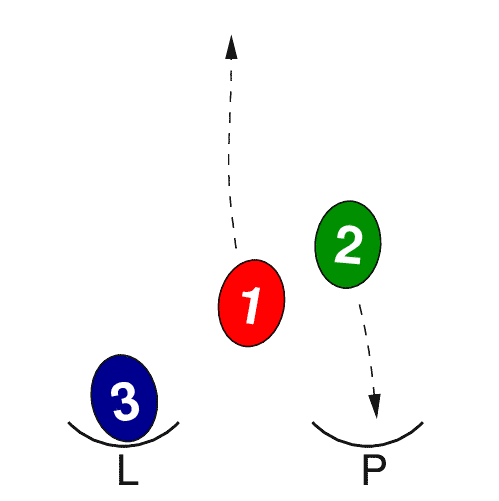
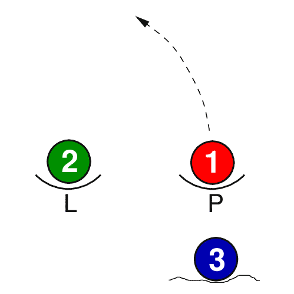
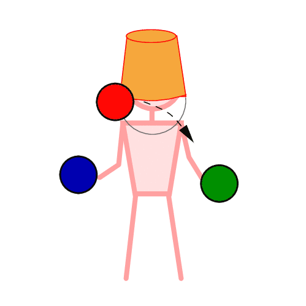

Jste zde: Žonglování » Míčky
Žonglování s míčky
Míčky jsou nejjednodušší náčiní. Snadno se hážou i chytají.
Jak začít žonglovat s míčky
 Rychlý návod jak začít házet se dvěma míčky a přidat třetí. Čtení pro začínající žongléry a žonglérky.
Druhy míčků
 Popis různý druhů míčků. Od tenisáků až k míčkům pro profesionální veřejné vystupování.
Popis různý druhů míčků. Od tenisáků až k míčkům pro profesionální veřejné vystupování.
Výroba míčků
 Návody na výrobu žonglérských míčků. Sadu tří pěkných míčků na žonglování je hotová za odpoledne a stojí míň než 100 Kč.
Zvednutí míčku nohou
 Už se nebudeš muset shýbat pro spadlý míček. Stačí se naučit tento elegantní způsob, jak zvednout míček ze země.
Balancování míčku
 S míčky nemusíš jenom házet. Vyzkoušej balancování míčku - třeba na hlavě. Na první pohled to vypadá snadně, ale je to pěkně těžké.
Žonglování s vajíčky
 Jsou šišatá, křehká a nadělají spoustu nepořádku. Avšak, kdo by odolal?
Sbírání spadlých míčků
 Když ti spadne míček, nepřestávej žonglovat.
Žonglování poslepu
 Může to znít neuvěřitelně, ale jde to.
Pirueta
Zatímco míčky letí, máš dost času i na piruetu.
Passing s míčky - mills' mess
Každý chce umět Mills' mess, ale ty ho můžeš umět ve dvou.
Míčky na zemi
Míčky se dostanou na zem velmi snadno a rychle, stačí chvilka nepozornosti. Takže co dělat, když už se to stane?
Legenda
Vysvětlivky k obrázkům.